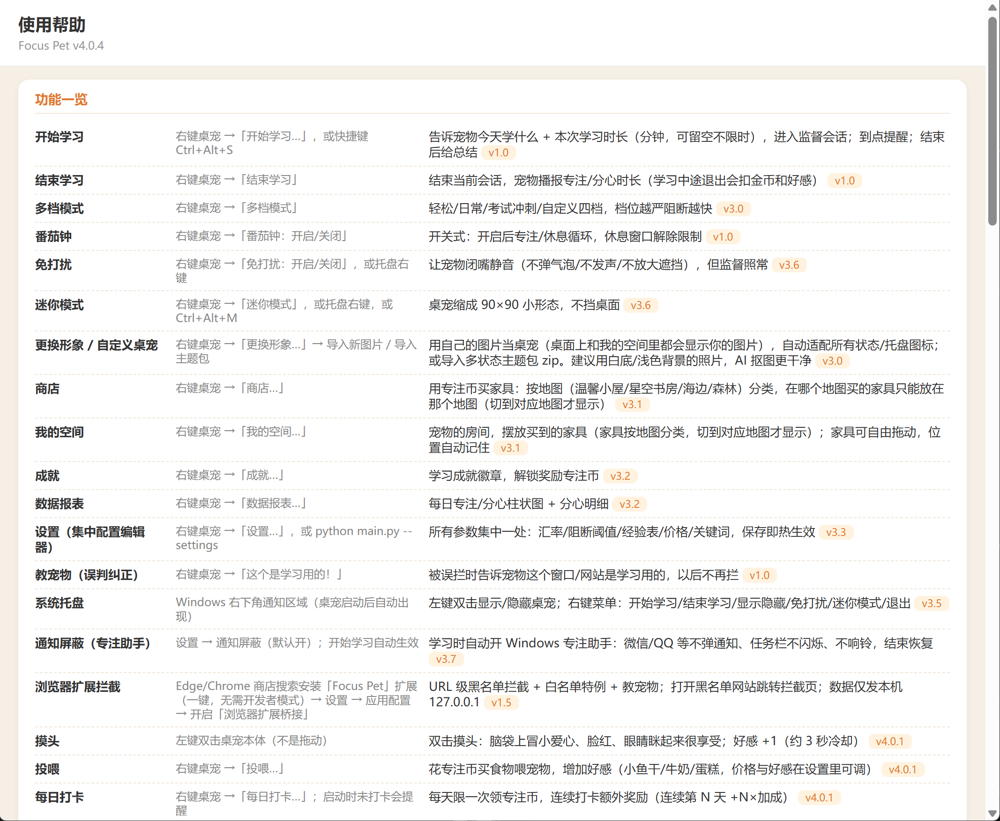
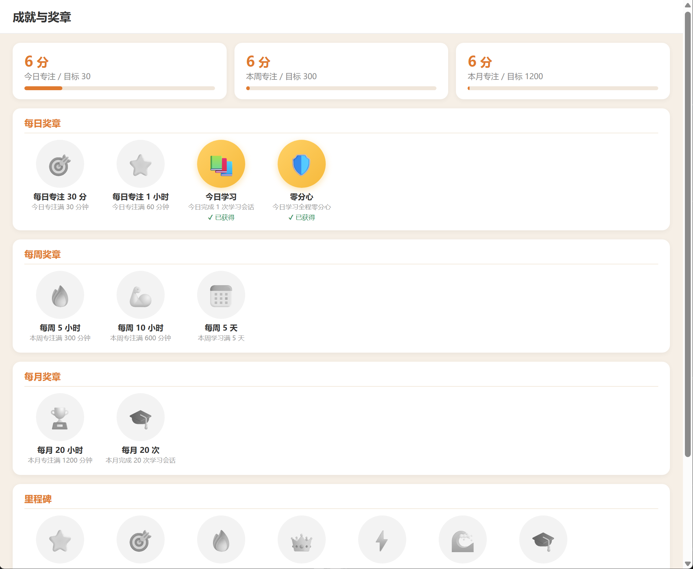
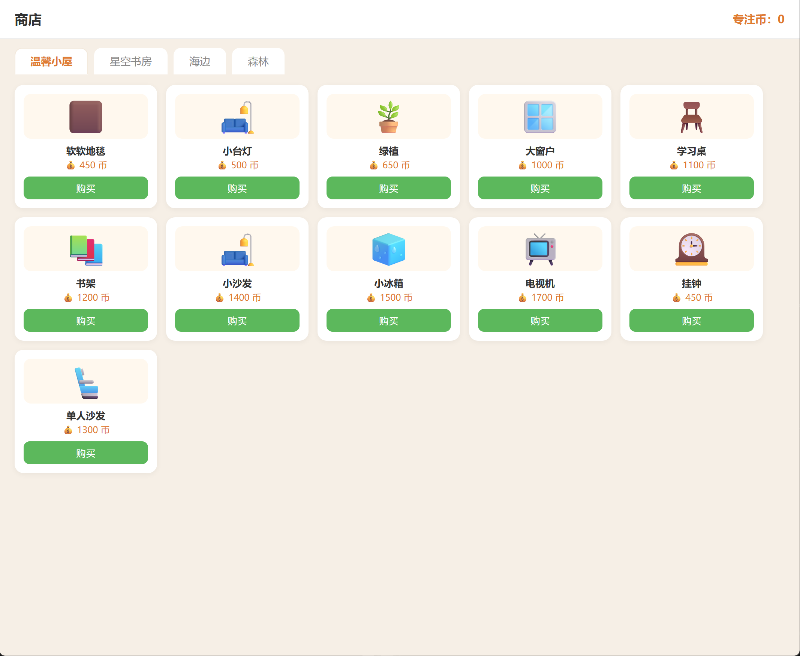
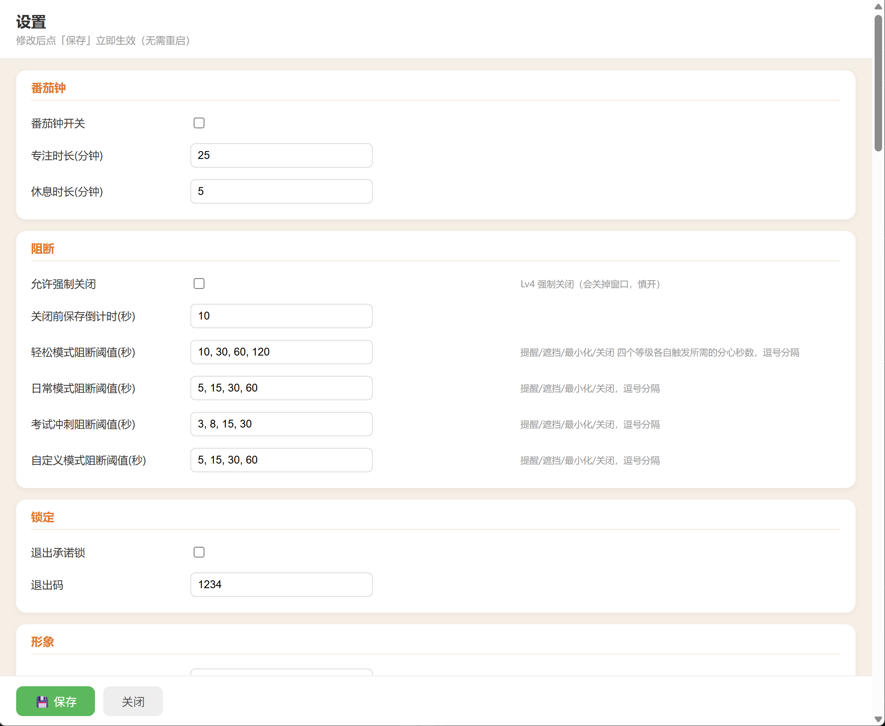
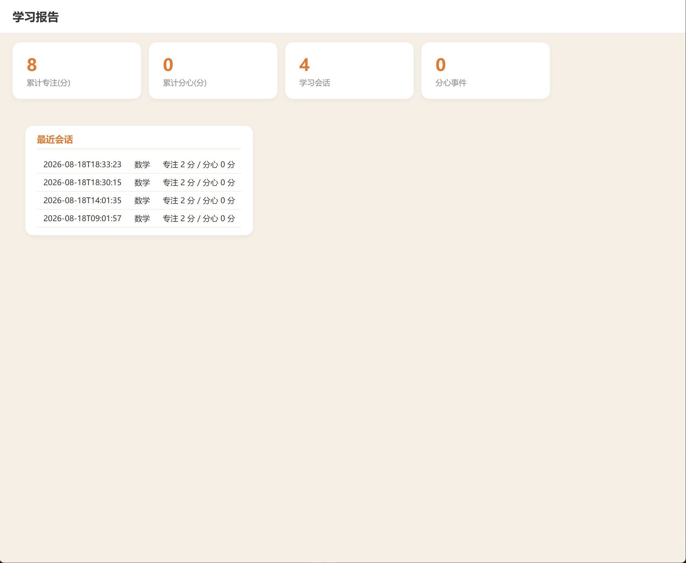

Focus Pet 🐾
A desktop companion pet that keeps you focused
⬇ Download for Windowsv4.0.4 · ~166 MB · Windows 10/11 · Installer with uninstaller

A desktop companion pet that keeps you focused
⬇ Download for Windowsv4.0.4 · ~166 MB · Windows 10/11 · Installer with uninstaller




